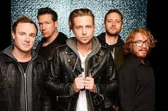

OneRepublic（共和世代）


2000年，瑞恩（Ryan）在納什維爾參加當地的電視詞曲創作比賽，贏得冠軍而搶下一紙唱片合約，並因此被音樂製作人提姆巴蘭發掘，讓萊恩作他的學徒。萊恩辭掉了工作，賣掉車子，買了錄音設備加入「提姆巴蘭大學附設101製作公司」，從此遊走於邁阿密到洛杉磯的錄音室，學習各式的錄音製作技巧。瑞恩因此成為獨當一面的製作人，並化名為Alias。後來更因為與保羅·奧肯福德合作而被格林美獎提名。
2002年時，瑞恩和在芝加哥當模特兒的查克（Zach）再次聯絡，並說服查克遷到洛杉磯，跟萊恩一起組樂團。九個月後，樂團與哥倫比亞唱片簽了合約，並找了鼓手艾迪·費舍爾（Eddie Fisher）、吉他手德魯·布朗（Drew Brown）及貝斯手提姆·梅爾斯（Tim Myers），組成共和時代（OneRepublic）。